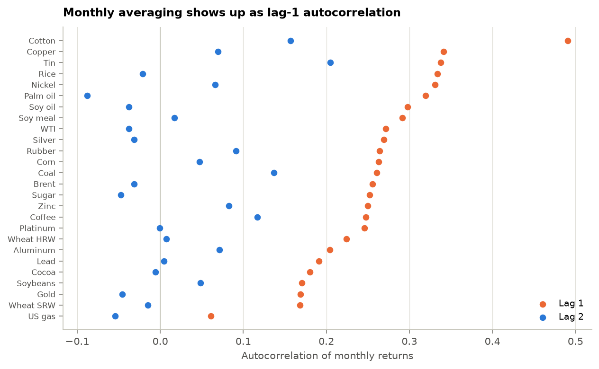
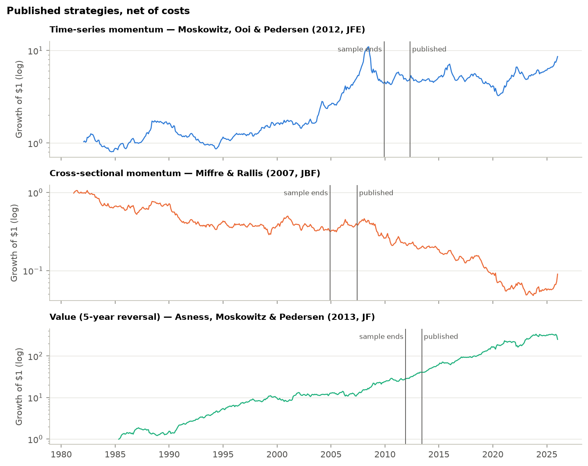
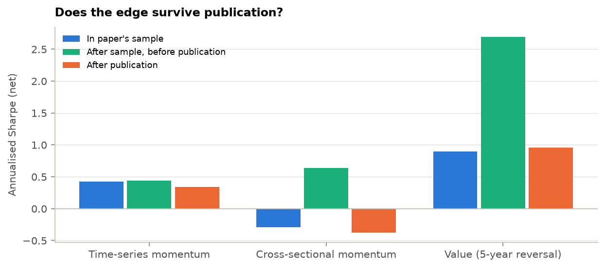
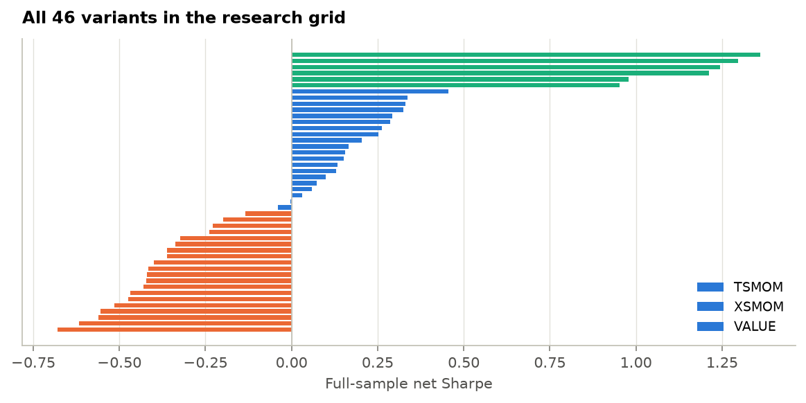
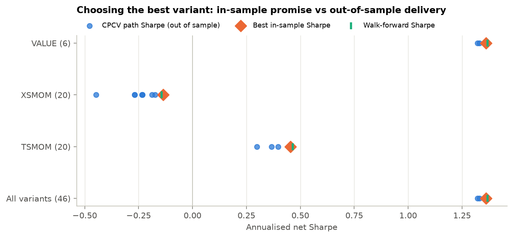
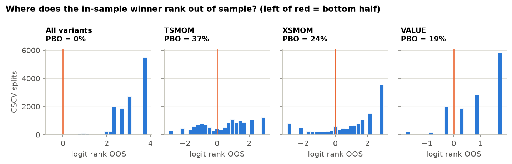
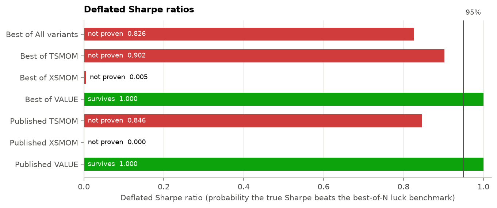

26 commodities · monthly 1980-01–2026-01 · source: GitHub mirror of the World Bank file; Updated on February 03, 2026 · generated 2026-09-27
World Bank Pink Sheet monthly prices for 26 commodities with a liquid futures analogue, 1980-01 to 2026-01. Returns are monthly log changes. A month is tradable once at least 10 commodities have prices.
| Commodity | Sector | Unit | Ann. vol | Lag-1 autocorr | Lag-2 autocorr |
|---|---|---|---|---|---|
| Brent | Energy | ($/bbl) | 31.3% | 0.26 | −0.03 |
| WTI | Energy | ($/bbl) | 32.0% | 0.27 | −0.04 |
| US gas | Energy | ($/mmbtu) | 46.9% | 0.06 | −0.05 |
| Coal | Energy | ($/mt) | 24.1% | 0.26 | 0.14 |
| Aluminum | Base metals | ($/mt) | 18.7% | 0.20 | 0.07 |
| Copper | Base metals | ($/mt) | 21.0% | 0.34 | 0.07 |
| Lead | Base metals | ($/mt) | 22.8% | 0.19 | 0.00 |
| Nickel | Base metals | ($/mt) | 28.2% | 0.33 | 0.07 |
| Tin | Base metals | ($/mt) | 20.2% | 0.34 | 0.20 |
| Zinc | Base metals | ($/mt) | 21.5% | 0.25 | 0.08 |
| Gold | Precious | ($/troy oz) | 13.9% | 0.17 | −0.05 |
| Silver | Precious | ($/troy oz) | 26.1% | 0.27 | −0.03 |
| Platinum | Precious | ($/troy oz) | 20.4% | 0.25 | −0.00 |
| Corn | Grains | ($/mt) | 20.3% | 0.26 | 0.05 |
| Wheat SRW | Grains | ($/mt) | 22.6% | 0.17 | −0.02 |
| Wheat HRW | Grains | ($/mt) | 19.9% | 0.22 | 0.01 |
| Soybeans | Grains | ($/mt) | 17.8% | 0.17 | 0.05 |
| Soy oil | Grains | ($/mt) | 20.1% | 0.30 | −0.04 |
| Soy meal | Grains | ($/mt) | 18.9% | 0.29 | 0.02 |
| Rice | Grains | ($/mt) | 19.4% | 0.33 | −0.02 |
| Palm oil | Grains | ($/mt) | 25.0% | 0.32 | −0.09 |
| Cocoa | Softs | ($/kg) | 22.4% | 0.18 | −0.01 |
| Coffee | Softs | ($/kg) | 24.7% | 0.25 | 0.12 |
| Sugar | Softs | ($/kg) | 29.8% | 0.25 | −0.05 |
| Cotton | Softs | ($/kg) | 18.4% | 0.49 | 0.16 |
| Rubber | Softs | ($/kg) | 23.7% | 0.26 | 0.09 |

| Strategy | Paper | Settings | Sample ends | Published |
|---|---|---|---|---|
| Time-series momentum | Moskowitz, Ooi & Pedersen (2012, JFE) | lookback=12, skip=1, scaled=True | 2009-12 | 2012-05 |
| Cross-sectional momentum | Miffre & Rallis (2007, JBF) | lookback=12, skip=1, q=0.333 | 2004-12 | 2007-06 |
| Value (5-year reversal) | Asness, Moskowitz & Pedersen (2013, JF) | years=5, q=0.333 | 2011-12 | 2013-06 |
| Strategy | Returns | Months | Ann. return | Ann. vol | Sharpe | NW t | Max DD | Turnover/mo |
|---|---|---|---|---|---|---|---|---|
| TSMOM | gross | 528 | 6.6% | 14.9% | 0.44 | 2.13 | −68% | 0.48 |
| TSMOM | net | 528 | 6.0% | 14.9% | 0.40 | 1.94 | −70% | 0.48 |
| XSMOM | gross | 539 | −3.4% | 15.1% | −0.22 | −1.29 | −94% | 0.71 |
| XSMOM | net | 539 | −4.2% | 15.1% | −0.28 | −1.62 | −95% | 0.71 |
| VALUE | gross | 489 | 15.3% | 15.6% | 0.98 | 5.68 | −35% | 0.41 |
| VALUE | net | 489 | 14.8% | 15.6% | 0.95 | 5.51 | −35% | 0.41 |
| COMBO | net | 489 | 5.6% | 7.4% | 0.75 | 4.47 | −18% | – |

| Strategy | Window | From | To | Months | Sharpe | NW t |
|---|---|---|---|---|---|---|
| TSMOM | In paper's sample | 1982-02 | 2009-12 | 335 | 0.43 | 1.60 |
| TSMOM | After sample, before publication | 2010-01 | 2012-05 | 29 | 0.44 | 0.55 |
| TSMOM | After publication | 2012-06 | 2026-01 | 164 | 0.34 | 1.01 |
| XSMOM | In paper's sample | 1981-03 | 2004-12 | 286 | −0.29 | −1.29 |
| XSMOM | After sample, before publication | 2005-01 | 2007-06 | 30 | 0.64 | 1.07 |
| XSMOM | After publication | 2007-07 | 2026-01 | 223 | −0.38 | −1.36 |
| VALUE | In paper's sample | 1985-05 | 2011-12 | 320 | 0.90 | 4.13 |
| VALUE | After sample, before publication | 2012-01 | 2013-06 | 18 | 2.69 | 4.47 |
| VALUE | After publication | 2013-07 | 2026-01 | 151 | 0.96 | 3.23 |

Placebo test. Shuffling each month's positions across commodities keeps the portfolio's shape but destroys which commodity gets which position. For the market-neutral strategies the placebos centre near zero (XS momentum −0.00, value 0.02), so the portfolio code carries no structural bias, and value sits far in the placebo tail (p = 0.005). TSMOM is different: a shuffle keeps each month's net long/short tilt, and that alone earns a Sharpe of 0.38 against the real 0.44. Most of time-series momentum's edge here is timing the commodity complex as a whole, not picking commodities.
| Strategy | Real gross Sharpe | Placebo mean | Placebo 5–95% | p-value |
|---|---|---|---|---|
| TSMOM | 0.44 | 0.38 | 0.22 to 0.53 | 0.239 |
| XSMOM | −0.22 | −0.00 | −0.22 to 0.21 | 0.945 |
| VALUE | 0.98 | 0.02 | −0.21 to 0.25 | 0.005 |
Link to the regime workflow. Months are labelled by the WTI regime the Markov-switching model reported the month before (so the label is known in advance). Turbulent months are few, so treat this as descriptive.
| Strategy | WTI regime last month | Months | Ann. return | Sharpe |
|---|---|---|---|---|
| TSMOM | Calm | 210 | 9.9% | 0.65 |
| TSMOM | Turbulent | 18 | −48.7% | −1.71 |
| XSMOM | Calm | 210 | −3.1% | −0.19 |
| XSMOM | Turbulent | 18 | −38.9% | −1.67 |
| VALUE | Calm | 210 | 15.4% | 1.04 |
| VALUE | Turbulent | 18 | 35.9% | 1.43 |
The research grid holds 46 variants: look-backs of 1–12 months, one- or two-month skips, vol-scaling on or off, terciles or quartiles, and 3–5 year value windows. Picking the best one after seeing the results is the classic way to overfit. Combinatorial purged cross-validation (López de Prado, 2018) splits 1980–2026 into 10 blocks, holds out 2 at a time (45 splits, 9 complete out-of-sample paths), chooses the best variant on the rest, and drops 1 month before and 12 months after each held-out block so overlapping look-back windows cannot leak.

| Variant set | N | Method | In-sample best | Out-of-sample | Shortfall | Most chosen |
|---|---|---|---|---|---|---|
| All variants | 46 | Purged CPCV | 1.36 | 1.35 | 0.01 | VALUE 4y q=1/4 |
| All variants | 46 | Naive CV | 1.36 | 1.36 | 0.00 | VALUE 4y q=1/4 |
| All variants | 46 | Walk-forward | 1.36 | 1.37 | −0.01 | VALUE 3y q=1/3 |
| TSMOM | 20 | Purged CPCV | 0.45 | 0.42 | 0.03 | TSMOM 12-1 vol-scaled |
| TSMOM | 20 | Naive CV | 0.45 | 0.45 | −0.00 | TSMOM 12-1 vol-scaled |
| TSMOM | 20 | Walk-forward | 0.45 | 0.47 | −0.01 | TSMOM 12-1 vol-scaled |
| XSMOM | 20 | Purged CPCV | −0.14 | −0.24 | 0.11 | XSMOM 9-2 q=1/4 |
| XSMOM | 20 | Naive CV | −0.14 | −0.23 | 0.10 | XSMOM 9-2 q=1/4 |
| XSMOM | 20 | Walk-forward | −0.14 | −0.14 | 0.01 | XSMOM 9-2 q=1/4 |
| VALUE | 6 | Purged CPCV | 1.36 | 1.35 | 0.01 | VALUE 4y q=1/4 |
| VALUE | 6 | Naive CV | 1.36 | 1.36 | 0.00 | VALUE 4y q=1/4 |
| VALUE | 6 | Walk-forward | 1.36 | 1.37 | −0.01 | VALUE 3y q=1/3 |

Purging changes little here because the strategies are simple rules: the only thing fitted is the choice of variant, and rankings are stable. Purging matters far more for fitted models (regressions, trees) trained on overlapping labels; the code handles both.
| Variant set | Variants | CSCV splits | PBO | OOS Sharpe < 0 | Verdict |
|---|---|---|---|---|---|
| All variants | 46 | 12,870 | 0.1% | 2% | ✔ Low risk |
| TSMOM | 20 | 12,870 | 37.2% | 20% | ✔ Low risk |
| XSMOM | 20 | 12,870 | 24.5% | 81% | ✔ Low risk |
| VALUE | 6 | 12,870 | 18.5% | 0% | ✔ Low risk |

| Candidate | Variant | Trials N | Sharpe | Luck bar SR0 | PSR vs 0 | DSR | NW t | Verdict |
|---|---|---|---|---|---|---|---|---|
| Best of All variants | VALUE 4y q=1/4 | 46 | 1.36 | 1.20 | 1.000 | 0.826 | 7.37 | ✖ Not proven |
| Best of TSMOM | TSMOM 12-1 vol-scaled | 20 | 0.45 | 0.25 | 0.998 | 0.902 | 2.10 | ✖ Not proven |
| Best of XSMOM | XSMOM 9-2 q=1/4 | 20 | −0.14 | 0.27 | 0.194 | 0.005 | −0.78 | ✖ Not proven |
| Best of VALUE | VALUE 4y q=1/4 | 6 | 1.36 | 0.22 | 1.000 | 1.000 | 7.37 | ✔ Survives |
| Published TSMOM | TSMOM 12-1 vol-scaled | 20 | 0.40 | 0.25 | 0.996 | 0.846 | 1.94 | ✖ Not proven |
| Published XSMOM | XSMOM 12-1 q=1/3 | 20 | −0.28 | 0.27 | 0.032 | 0.000 | −1.62 | ✖ Not proven |
| Published VALUE | VALUE 5y q=1/3 | 6 | 0.95 | 0.22 | 1.000 | 1.000 | 5.51 | ✔ Survives |

Reading the luck bar. SR0 is the Sharpe the best of N variants would show with zero true skill, given how much the variants' Sharpes differ. Across all 46 variants the bar is high because the families differ in genuine skill, not only luck; within a family it is the fairer test, which is why each published strategy is deflated by its own family.
| Check | How | Result | Status |
|---|---|---|---|
| Look-ahead | Signals use prices through t−1; placebo and no-look-ahead tests | Market-neutral placebos centre on 0.02 or less | ✔ Pass |
| Data artefact | Lag-1 autocorrelation from monthly averaging | Median 0.26; neutralised by skipping a month | ✔ Pass |
| Replication | Published settings, gross and net | Positive net Sharpe: TSMOM, VALUE; negative: XSMOM | ▲ Partial |
| Decay | McLean–Pontiff windows | Post-publication Sharpe: value 0.96, TSMOM 0.34 | ✔ Pass |
| Selection bias | Purged CPCV, walk-forward | Out-of-sample within 0.11 of in-sample in every family | ✔ Pass |
| Overfitting | PBO (CSCV), deflated Sharpe | PBO 37% for TSMOM; value DSR 1.000 | ▲ Family-dependent |